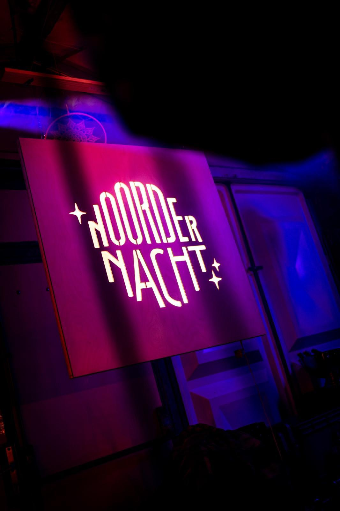
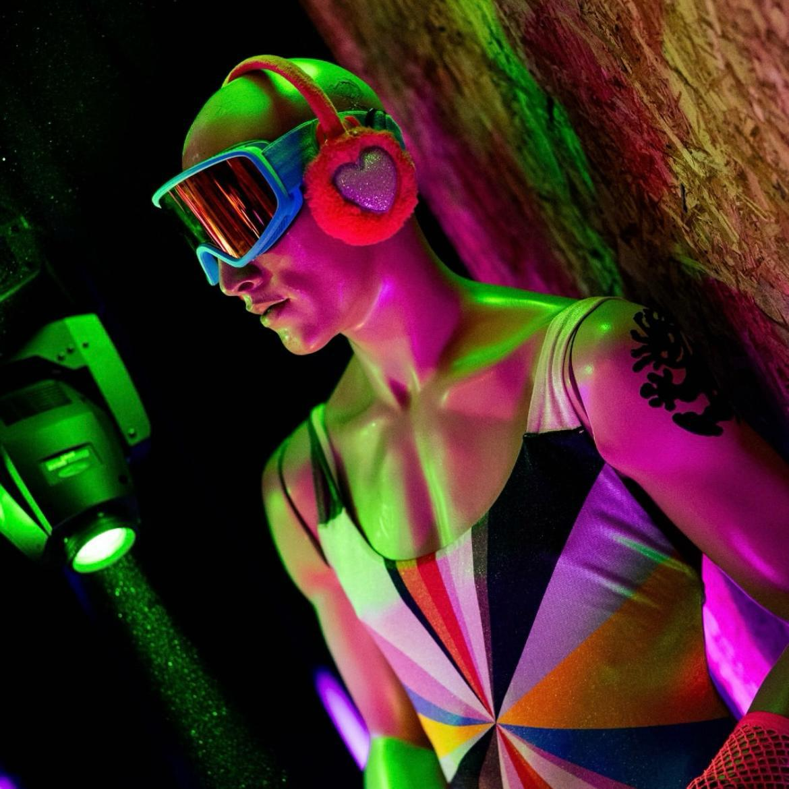
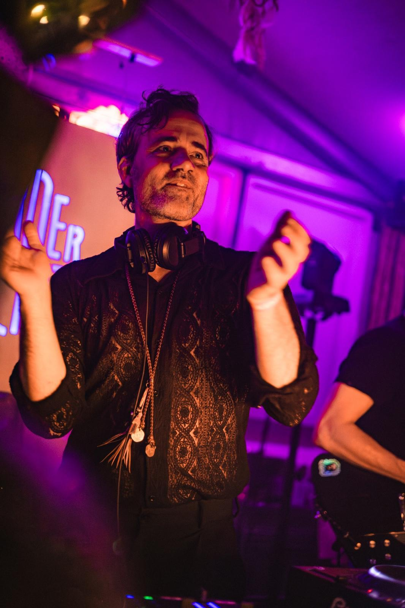
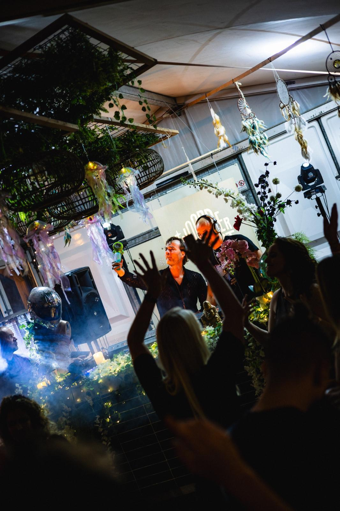
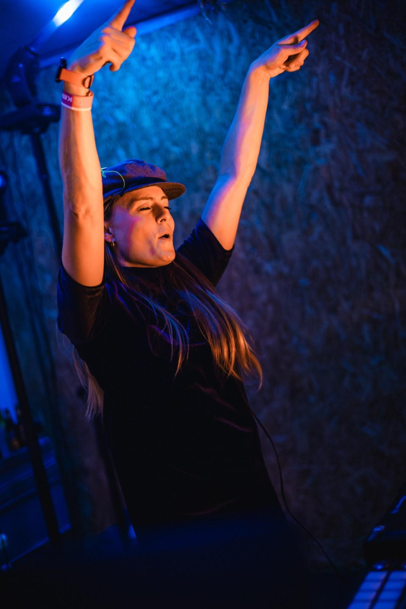
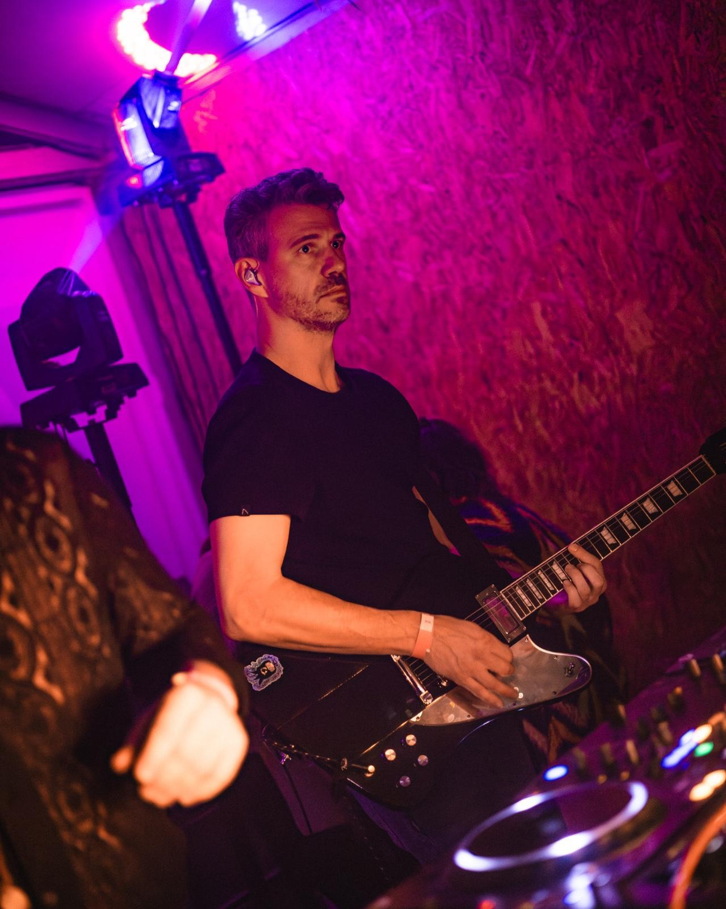

Noordernacht is waar gelijkgestemden samenkomen in het duister van de nacht. Laat de muziek je meenemen en verlies jezelf in een ruimte waarin muziek, energie en verbinding je meenemen. Hier vind je jouw mensen en beleef je het moment.





